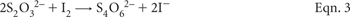
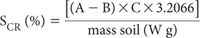
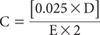

The Cr reduction method (SCR method) is based on the conversion of reduced inorganic S to H2S by a hot acidic CrCl2 solution; the evolved H2S gas is trapped quantitatively in a Zn acetate solution as solid ZnS. The ZnS is then treated with HCl to release H2S into solution, which must then be quickly titrated with I2 solution to the blue-coloured end point indicated by the reaction of I2 with starch.
This laboratory method is relatively quick. It reliably measures reduced inorganic S compounds in soils and sediments (Sullivan et al. 2004). Those measured are: i) pyrite and other Fe disulfides; ii) elemental S, and iii) acid volatile sulfides (e.g. greigite and mackinawite). The method can be made specific to the Fe disulfide fractions if pre-treatments are used to remove the acid volatile sulfides and elemental S fractions. Importantly, safety protocols must be observed at all times as the method uses and produces toxic chemicals: H2S is a flammable gas (flash point of –82°C, explosion limits of 4.3–46%, and an auto-ignition temperature of 260°C), and Cr is a potential environmental contaminant.
The SCR method is not subject to significant interferences from S in either organic form or inorganic form (e.g. gypsum) as can occur with peroxide oxidisable methods (Sullivan et al. 1999). It is arguably the most reliable chemical measure of reduced inorganic S and is particularly suited to reduced and organic soils. The method is recommended for very low sulfidic soils as it has good sensitivity and precision around the action limits that trigger the need for the management of ASS in some Australian states. The reporting limit of the method described is around 0.02% S, with the range of 0–10% S achieved by varying soil sample weights. Sullivan et al. (1999), using a 5.0% pyrite standard and a slightly different method, had a pyritic recovery of 98.7%. Canfield et al. (1986) recorded 95.9% recovery, while Raiswell et al. (1988) reported ‘close to 100%’ recovery using similar Cr reduction methods.
See Figure 20.3.
Zinc Acetate Solution
Dissolve 60 g of zinc acetate dihydrate [Zn(O2CCH3)2(H2O)2] in 1.5 L of deionised water. Add 200 mL of 28% ammonia solution (NH4OH) and make to 2 L with deionised water.
Aqueous 6 M Sodium Hydroxide (NaOH)
With care, dissolve 24.0 g NaOH in a small volume of deionised water then make to 100 mL. Store in a sealed plastic reagent bottle to avoid contact with air.
Standard 0.025 M Sodium Thiosulfate
Obtain commercially (or dilute from a more concentrated commercially-prepared standard solution). Alternatively, prepare by dissolving 6.205 g of Na2S2O3.5H2O in deionised water (see Note 1), add 1.5 mL of 6 M NaOH, mix well and make to 1.0 L with deionised water in a volumetric flask. This locally-prepared Na2S2O3 solution is used to standardise fresh I2 Solution. Standardisation is based on oxidisation of thiosulfate to tetrathionate (maintain a solution pH of <7.6 in the absence of sodium carbonate or equivalent), wherein one equivalent of thiosul-fate corresponds to one equivalent of I2 (i.e. ½ I2). The chemical reaction is shown in Eqn. 3.

Figure 20.1. Flow diagram for acid-base accounting using the chromium suite (adapted from Ahern et al. 2004b).
Figure 20.2. Flow diagram for acid-base accounting for SPOCAS suite (adapted from Ahern et al. 2004b).
Figure 20.3. Distillation apparatus used in the determination of SCR. Nitrogen (N2) gas flow rate is regulated at 2–3 bubbles/sec. Allow the N2 gas to purge the system for ≈3 min between samples.
Figure 20.4. Several SCR distillation units on electric heating mantles in a laboratory fume cupboard. There is a H2S monitor both on the wall and worn by the operator, who is also wearing other protective items.
Dissolve 2 g arrowroot starch and 0.2 g salicylic acid [C6H4 (OH).COOH] in 100 mL of hot deionised water, then cool before use.
Iodine Solution
Dissolve 22.50 g of potassium iodide (KI) in deionised water and add 3.2 g I2. After the I2 has dissolved, dilute to 1.0 L with deionised water and standardise against 0.025 M Na2S2O3 solution using the Starch Solution as an indicator. While so doing, record volume (D mL) of Na2S2O3 solution used in the titration, and the volume (E) of I2 solution titrated. Standardisations should be performed daily.
95% Ethanol
Obtain commercially as methylated spirits.
Chromium Powder
Ideally, this technical grade powder should be no finer than 0.5–1.0 mm for important operator safety reasons (see Note 2).
≈6 M Hydrochloric Acid (HCl)
Prepare by adding ≈585 mL concentrated (ρ = 1.16 g/mL; 31.5–33% w/v) HCl to about 400 mL deionised water slowly and with stirring. Cool, then dilute to 1.0 L. If the concentrated HCl has a specified density of around 1.18 g/mL (i.e. ≈12.3 M or 38% w/v), then the volume of HCl required is ≈488 mL/L.
Refer to Figure 20.3 for a schematic diagram of the distillation apparatus used for the SCR method and to Figure 20.4 for an example of SCR distillation units in use. Multiple distillation units enhance operator efficiency.
The schematic diagram of the SCR distillation unit (Figure 20.3) is not to scale. The condenser, for example, should be a minimum length of 400 mm, ideally connected to a refrigerated cooling-water supply. Glass/glass connections should be ground and gas-tight, with PTFE sealing rings recommended. Moreover, all stages of the procedure, including digestion of soil, distillation of H2S and subsequent titration to quantify the amount of H2S liberated/absorbed must be conducted in a fume cupboard operating (as a minimum) to AS 2243.8 (Anon 2006), since the method uses and produces toxic chemicals. A sensitive H2S gas sensor with detectors adjacent to the apparatus and the Zn Acetate Solution should be installed, tested regularly, and used to monitor the local atmosphere during the conduct of this procedure. The fume cabinet must be operating with sufficient efficiency to prevent operator exposure to H2S gas in excess of 10 mg/L and much lower if possible.
When the distillation unit/s are set up and tested for efficient and safe operation, weigh 0.5 g (or as guided by Note 3) of finely ground soil (<0.5 mm, previously dried rapidly at 85°C) into a double-neck round-bottom digestion flask. Record the actual sample weight to nearest 0.001 g (W g). Add, with adequate safety precautions (see Note 2), 2.0 g of Cr powder (a calibrated scoop for the batch of Cr powder on hand provides satisfactory accuracy) and 10 mL 95% Ethanol to the digestion flask and swirl to ‘wet’ the sample. Include a reagent blank in each batch and subject it to the same procedure as for soils.
Place the digestion flask in the heating mantle and connect to the condenser. Attach the pressure equalising funnel, making sure the N2 gas flow arm is facing the condensers and that the solution tap is shut. Attach a Pasteur pipette to the outlet tube at the top of the condenser and insert it into a 100 or 150 mL Erlenmeyer flask containing 40 mL of Zn Acetate Solution. Ensure there is a flow of cooling-water flow in the condenser.
Add 60 mL ≈6 M HCl to the glass dispenser in the pressure equalising funnel. Connect the N2 flow to the pressure equalising funnel and adjust the flow to obtain a bubble rate in the Zn Acetate Solution of about 2–3 bubbles/sec. Allow the N2 gas to purge the system for about 3 min. Slowly release the ≈6 M HCl from the dispenser into the double-neck flask. Wait for 2 min before turning on the heating mantle and adjust the heat so that a gentle boil is achieved. Check for efficient reflux in the condenser. Allow to digest for 20 min. This part of the procedure must be undertaken in a fume hood to protect the operator from any H2S gas hazard.
Subsequently, remove the Erlenmeyer flask and wash any of the ZnS formed and adhering to the Pasteur pipette into the Erlenmeyer flask, using deionised water. Add 20 mL of ≈6 M HCl and 1.0 mL of the Starch Indicator Solution to the Zn Acetate Solution and gently mix on a magnetic stirrer (or mix by swirling). Titrate the Zn Acetate trapping solution (now containing ZnS) with the I2 Solution to the first permanent-blue end point. Record the volume of titrant (A mL). Perform the same titration on the blank sample and record the volume of titrant (B mL). As toxic concentrations of H2S gas can be evolved after HCl is added to the Zn Acetate trapping solution, at least that part of the procedure should be carried out with caution and with a minimum of delay after the HCl has been added.
Following completion of the titration and when the solution is cool, discard the residual solutions (these contain Zn, strongly acidic CrCl3, plus soil residue), typically via an interim step of safe, bulk storage prior to later commercial disposal of the hazardous waste. Storage container/s and storage location/s must take account of the occasional possibility of further H2S release, particularly when residues from soils very high and very low in SCR are combined. It is bad practice to knowingly dispose of heavy metals such as Cr and Zn into the municipal sewerage system.
Calculate the concentration (%) of chromium reducible sulfur (SCR) as follows:

where
A = the volume of I2 Solution (mL) used to titrate the Zn Acetate Solution following soil digestion.
B = the volume of I2 Solution (mL) used to titrate the Zn Acetate Solution following Blank digestion.
C = the Molarity of the I2 Solution, as determined daily by titration of this solution with the standard 0.025M Na2S2O3 solution. The molarity (C) is calculated as:

where
D = titration volume (mL) of Standard Sodium Thiosulfate Solution
E = volume (mL) of I2 Solution titrated
W = actual soil mass (g)
Report % SCR on an oven-dry (85°C) basis.
1. Since sodium thiosulfate is deliquescent in moist air, it must first be dried over silica gel contained in a desiccator.
2. Cr exists in nature at valances from 1 to 6, but most commonly at +3 and +6 oxidation states. Of these, Cr3+ is the most stable and least toxic to humans. As the metal (non-ionic) and as a fine powder (e.g. <0.5 μm), Cr powder may cause (among others) pneumoconiosis if inhaled across the long term. The fine powder is combustible and gives off irritating or toxic fumes in a fire. Moreover, Cr is a human carcinogen (may cause lung and throat cancer) and a mutagen. (It has an airborne exposure limit of around 0.5 mg/m3 over 8 h.) Accordingly, a minimum size specification for the Cr powder no finer than 0.5–1.0 μm is suggested to lessen the chance of operator exposure. In addition: (i) a respirator equipped with a P2 filter should be mandated when handling the Cr powder; (ii) any Cr powder spillages should be removed with a HEPA filter (not a standard shop vacuum cleaner), and (iii) management should consider testing urine Cr levels (these should be <15 μg Cr/L of urine) if any staff over-exposure is suspected.
3. The optimum weight of soil material to digest depends on the expected reduced inorganic S content of the soil, and is a compromise.
• If too much reduced inorganic S is digested, then too much H2S will be supplied to the trapping solution. This may either exceed the capacity of the solution to trap the H2S as ZnS (causing an apparent low result) or more likely may require a large volume of I2 titrant.
• If too little reduced inorganic S is digested, then only very small quantities (if any) of H2S will be supplied to the Zn Acetate (trapping) Solution. Samples with very low reduced inorganic S contents will result in very small volumes of I2 titrant being used, with subsequent poor analytical precision.
If the maximum likely reduced inorganic S content can be assessed (such as by a screening analysis using total S), the following guidelines are useful for determining the optimum sample weights to use. (The actual weight used must be accurately known and recorded.)
• for SCR contents <0.5%, use ≈3 g of dry, finely ground sample.
• for SCR contents of ≥0.5 to <1%, use ≈0.5 g of dry, finely ground sample.
• for SCR contents of ≥1% to <3%, use ≈0.1 g of dry, finely ground sample.
• for SCR contents of ≥3%, use ≈0.05 g of dry, finely ground sample.
If the likely SCR content is not known, then at least 0.5 g of dry powdered sample should be used to ensure adequate analytical precision.